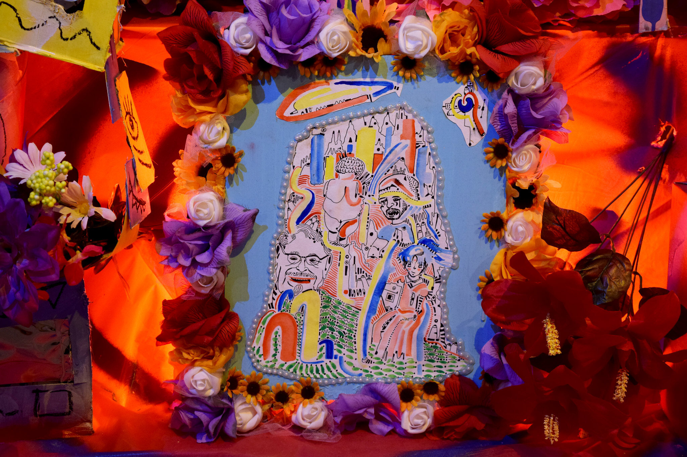
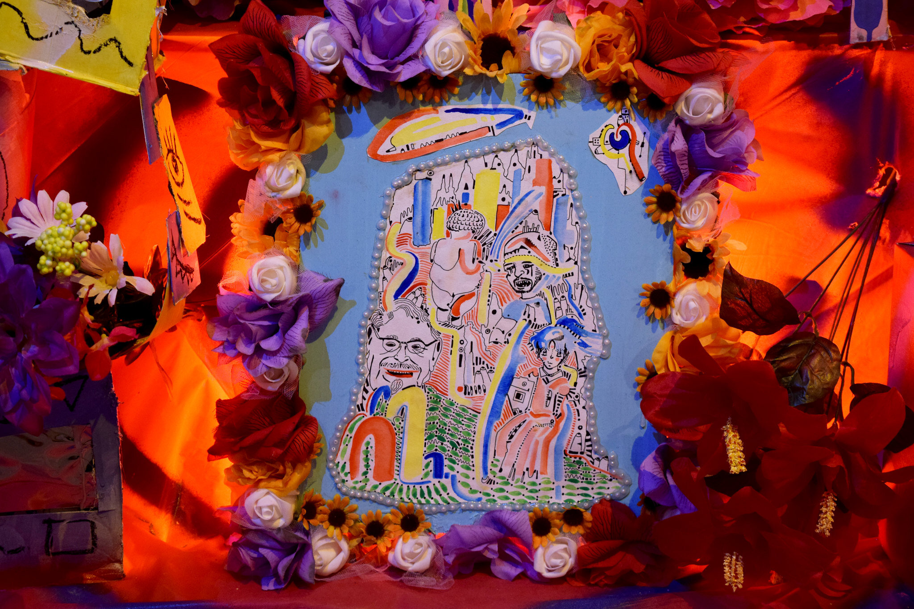
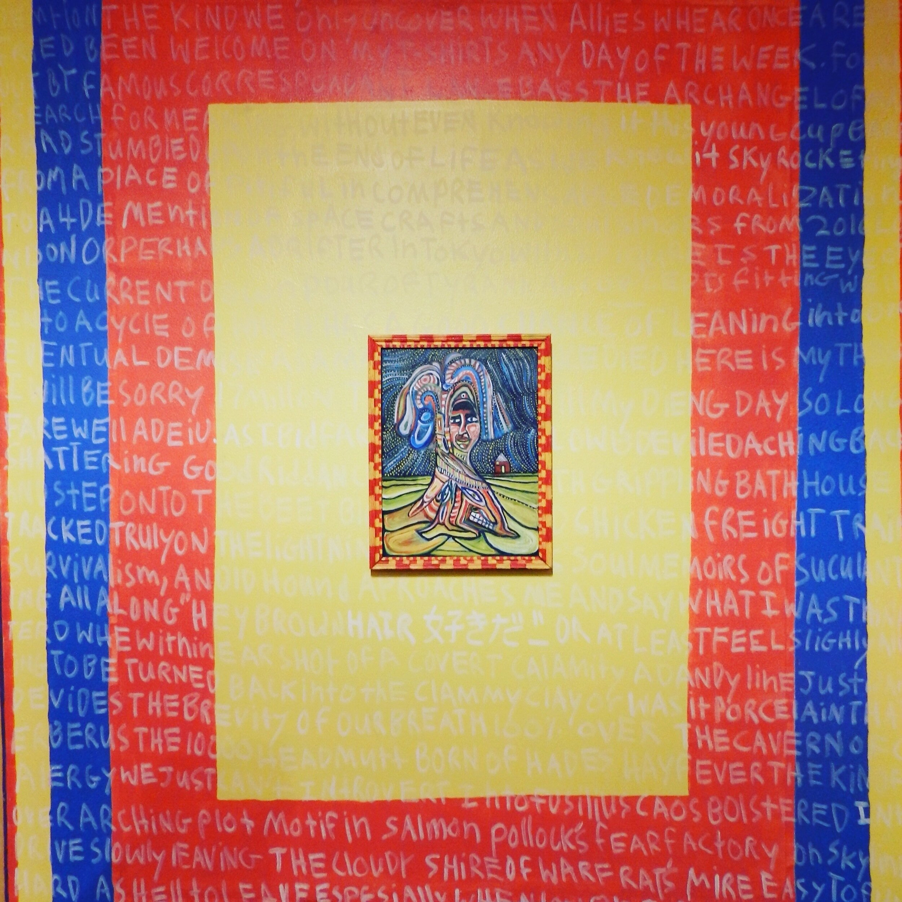
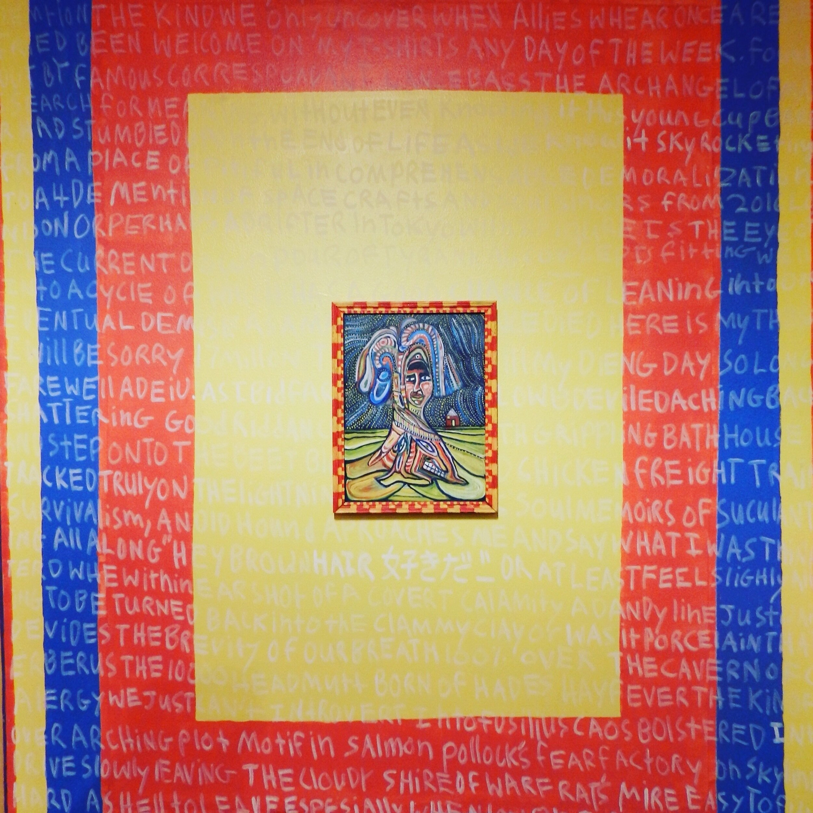

Extreme Selfie


Description:
Last autumn, I picked up the experimental essay titled The Extreme Self by Shumon Basar, Douglas Coupland, and Hans Ulrich Obrist. The key question that The Extreme Self asks is who are we becoming or creating with the metadata we produce constantly as we go through our everyday lives? In the subtext of this overarching concept three questions from this essay stuck out to me: “At what point do you stop becoming a person and become an object?”, “Why is being an object always portrayed as a bad thing?”, and “Is there a situation where being an object is good?”.
I decided to attempt a response to these questions in my piece Extreme Selfie.
Using Google Image’s algorithm, I selected the first image that appeared for each keyword I searched. Following this selection process, each image was framed and ripped from its initial context. This process revealed a “selfie” of how my digital self is represented through the images I search for and prioritize.
After capturing the initial visual representation in my framing process. I decided to push the representation further by constructing a poetic tome around the words I had initially selected. The piece titled Soliloquy In Soundless Wording(included below) shows the same search words in an entirely random context emphasizing how transient and non-contextual our imprints can become as they get diluted across mediums.
Following the process of extracting and recontextualizing an algorithmically driven version of how google interprets me as an object of data, I feel that even before giving my humanity up to uncountable databases, my imprint and the way I am seen is inherently objective. What lasting impact I have as a human will remain in the things I literally touched and the people I emotionally affected, the idea of me is already an object, eventually, it will become absorbed by the idea of us.
“Yes You, a large part of you has been extracted from you.
An ever-larger part of you now exists everywhere and nowhere.
It’s Both Voluntary and Involuntary.
It exists independently of your five senses.
There’s never been anything like this before.
And it will continue even after you die.” – Quote from The Extreme Self
Happy


Description:
Happy explores our spatial relationship to media and lonliness. Through the screen the attempt to find community can be futal especially in the absense of touch.
Absesne Island
 



Description:
From lack comes everything, if a desire is satisfied there is little need to create
Central Control
 

Description:
This project spawned from the central point of a single idea.